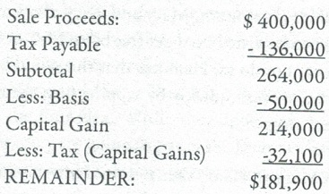

Another issue when using entities to hold real assets has to do with taxes. And here we are not talking about payroll taxes. Typically, in an asset-holding entity payroll taxes are not an issue. The asset generally offers a passive income stream for which no salary, and thus no payroll taxes, are involved. Be sure to check with your advisor to make certain this is your situation.
The key taxation element with asset-holding entities has to do with transferring the asset in and out of the entity. Suppose, for example, you want to convert a single family home you own in an entity to personal use. If that home were owned in a corporation, distributing it out to yourself would be taxable event. In other words, the corporation would have distributed a valuable corporate asset, the house, to you, the shareholder. When shareholders receive distributions from a corporation the transaction is taxed.
On the other hand, transferring the house out of an LLC is not a taxable event. The house comes out at its basis, the amount it was transferred in at. For example, if you bought a house for $100,000 three years ago in the name of the LLC and wanted to convert it from LLC property to your personal property it would come out at the same $100,000 value, your basis or cost of the property. Of course, if you later sold it for $150,000 you would pay tax on the $50,000 gain. But importantly, unlike a corporation, real estate, intellectual property as well as stocks and bonds in a brokerage account can be transferred in and out of an LLC at their basis, thus incurring no taxation.
Another example, assume JoeBob LLC has one asset. It is a 1950 single-wide mobile home that has been rented for years to Mary Sue. It has an adjusted basis in the LLC of $500 and a fair market value of $4,500. Joe and Bob (the two owners of the LLC) want to discontinue the LLC and get out of the rental real estate business. Because the mobile home is owned in an LLC, the LLC can evict the tenant and distribute the property to the members without a tax consequence. The basis in the mobile home that is distributed will be $500. Joe and Bob could then occupy the mobile home without a tax consequence.
If the mobile home were in an S corporation, the $4,000 of appreciation would be recognized as gain and reported on the shareholders’ income tax returns. This would be a substantial cost to Joe and Bob to terminate the business.
As you might imagine, this beneficial LLC treatment of asset transfers is another significant reason why LLCs are favored for asset-holding entities.
Prior to their estate plan gifting program and their understanding of LLC and LP law, Mary and Gary had wrestled with how to take title. They had located a four-plex in an appreciating area. Knowing that they, wanted asset protection and a limitation of liability they considered forming an LP, LLC, or Corporation to hold the real estate. Their accountant tells them that if they ever want to distribute an appreciated real estate asset out of an entity, they formed the consequences would be significantly different for each entity.
Mary and Gary’s first reaction is: Why would we want to transfer the asset out of the entity we formed? A good question, their accountant notes. He then explains that if Mary and Gary are ever to sell the property, most lawyers representing buyers will not want to assume whatever liabilities, whatever, skeletons or unknowns, are associated with the LLC, LP or Corporation. Most lawyers, in trying to protect their buyer/client will want to buy only the asset (the real property) and not the entity, which may have claims or contingent liabilities against it that the buyer could then become unwittingly responsible for.
So, the ability to hold the real estate in a protected vehicle is the first half of the equation, with the second half being the ability to get it out cleanly so it can be sold to the next guy.
Mary and Gary’s accountant outlines the following tax scenario for dealing with appreciated real estate. Assume that the property has been held long-term (over one year) the consequences are as follows:
C corporation: The $400,000 gain is taxed first at the corporate tax rate. Approximately $136,000 is paid in tax (as of this writing). The gain on a non-liquidating distribution of the remaining $264,000 is then taxed again as a dividend to the shareholders. The current tax rate on dividends for some taxpayers (as of this writing) is 15 percent, leaving the shareholders with only $224,400 left.
If they liquidate (dissolve) the C corporation, the tax consequence formula is as follows:

Clearly, holding real estate in a C corporation carries a sizeable tax burden. What are the alternatives?
S corporation: The $400,000 gain passes through the corporate level without tax and is taxed at the shareholder’s individual capital gain rate.
LLC or LP: Similarly, the $400,000 gain flows through the LLC or LP to its members or partners where it is taxed at their individual capital gain rate.
Due to the flow-through nature of S corporations and LLCs/LPs, each entity will have the same net tax consequences when the property is sold. But the real benefit of using an LLC or LP to hold real estate comes when the owners want to remove the property from the entity without selling it or want to convert it to personal use property. For example, Mary and Gary own the above-mentioned four-plex. They decide that they want to deal with a higher class of tenant, so they enter into a like-kind (tax free) exchange of the four-plex for a $500,000 home in an upscale neighborhood. They rent the home for a couple of years. Realizing that they are tired of the upscale tenants’ whims and idiosyncrasies, they decide to convert the rental into personal use property and live in it as their primary persona residence. At the end- of the day, if Gary and Mary owned the four-plex in an LLC, they would now own a $500,000 home and be able to enjoy the good life without any tax consequence on the conversion from business to personal property. If the four-plex were owned in an S corporation, getting the home out of the S corporation would have resulted in a significant tax liability. Couldn’t you think of better things to do than paying a tax bill just because you wanted to put real property in an S corporation?
Still talking to their accountant, Mary and Gary also learn that loan refinancing proceeds can be distributed tax-free by an LLC or LP, but that, again, a corporation cannot do so. He notes that this could be important if they ever want to access cash quickly by tapping into their real estate’s equity through refinancing.
LLC or LP?
The question for Mary and Gary then becomes whether to use an LLC or LP to hold the real estate.
Their accountant points out a subtle tax difference between the two entities involving recourse debt When an entity borrows money, many lenders will ask for a personal guarantee from one or all of the members, partners or shareholders. If the entity doesn’t pay, the lenders want recourse (the ability, to collect from someone else, such as a personal guarantor). In some cases, the entity or its assets are so strong that a lender may not seek a personal guarantee, in which case the loan to the entity is considered a non-recourse debt.
The issue arises with regard to a party’s tax basis. By including an entity’s debt in your tax basis you can use up a greater amount of the entity’s losses to offset other sources of income. As an example, assume you and two friends purchased a duplex for $120,000 with $30,000 down and a loan of $90,000. If your share of the purchase price is $10,000 you can write off losses generated by the entity up to that amount However, if you can also include your share of the value of the loan (debt) in your tax basis, in this case $30,000, you can write off a total of $40,000 in losses (your $10,000 down plus the loan share of $30,000) in order to offset other income you may have. It should be noted that S corporation shareholders cannot include in the basis of their stock the corporation’s debt, assuming the debt is qualified non-recourse financing.
With an LP, by definition, a general partner is personally liable for any debt. And the wrinkle in all of this is that because of the general partners automatic liability (whether the debt is recourse or not) the limited partners cannot increase their tax basis by the debt unless they personally guarantee the debt. Many limited partners may not want to take on a personal guarantee, especially if they do not really have to otherwise. As such, if real property is purchased with recourse debt, all the LLC members receive an increase in basis, while in the LP setting only the general partner(s) get any increase in basis.
Back to Mary and Gary. They are not going to borrow any money - to purchase the four-plex While they appreciate knowing the rules on recourse debt, they are going to pay cash Their tax basis is going to be the current fair market value of the property anyway. They want to know what other considerations there are in using an LLC versus an LP.
Their accountant then discusses one other main issue: management and its cost.
As we have discussed, LLC members can either be active or passive in their management. With an LP, only the general partner may manage It is advisable to use a Corporation or an LLC to serve as the general partner in order to, limit liability. But then you are paying the annual state’s filing and tax return preparation fees for two entities instead of one.
For Mary and Gary, the additional cost is not material. They like the definitive mandate of a Limited Partnership, whereby limited partners can in no way be involved in management. They like using an LP for their estate plan gifting strategy. Because they live in California, they also like staying away from the State of California’s extra taxes on - LLCs. Their accountant indicates that each client is different, with some favoring the reduced expense of an LLC and the need to only prepare one entity tax return.
To each his own entity.
Does a transfer of real estate into an entity trigger a due-on-sale clause for mortgages?
Many mortgages are written so that any transfer will technically trigger a due-on-sale clause requiring the borrower to pay off the full amount
of the loan. By law, however, mortgage companies have to allow a transfer from a borrower to a Living Trust so that the borrower can achieve
his or her estate planning goals. I have had clients explain in advance to the mortgage company that they are first going to transfer
the property into a Living Trust and from there transfer it into an LLC/LP so that they can further accomplish their estate planning and gifting
goals. When the mortgage company agrees they then explain that because there are often transfer taxes and other costs associated with it all
they are just going to do one transfer, from their individual name to the LLC/LP. In most cases, this works. I have had other clients
consciously risk that the mortgage company’s computer will never notice a transfer as long as the mortgage is paid and transfer away
without notice to anyone A key factor in the due-on-sale question is whether interest rates are in balance or not If older rates are at four
percent and newer rates are at nine percent you can be sure that mortgage companies will be out looking for ways to trigger due-on-sale clauses
so they can lend money at higher rates.
I want to buy real estate in the name of an LLC/LP but lenders won’t loan to my new entity. What can be
done?
Many lenders will not loan monies to a newly formed LLC/LP entity created for the purpose of acquiring real estate. Look at it from the
lender’s point of view: The entity is brand new, with n6 track record and no assets. Would you lend to such a client? However, there is a
way to achieve your goal Lenders will allow you, as an individual, to borrow the money to buy the real estate. Title is taken in your name. A
first deed of trust securing the lender for the loan is filed Several days later title is transferred into the entity’s name, offering the
protection you need. The lender can still hold you personally responsible for the loan, and enforce the deed of trust, which is the security
they need. (And really is all the security they seek in the first place. In other words, their position has not changed).
What is the proper way to bold real estate assets when using an LLC/LP?
Real estate assets should be held in the name of the entity. On the county recorders’ rolls for example, Parcel 123-456 should be titled
to XYZ, LLC (or XYZ, LP). Failure to so hold such an asset may allow a creditor to reach it on the grounds that proper, formalities were not
followed.
How does a transfer of real property into an LLC/LP affect title insurance?
There can be certain situations in which title insurance protection will not apply to a new entity or the successor of a dissolved entity. You
Ad review the terms of any title insurance policy carefully prior to any transfer. As a general rule you will want to use a grant deed instead
of a quit claim deed in an attempt to preserve the title insurance.
What happens if a Wyoming or Nevada LP or LLC holds rental, real estate in an outside state?
Collecting rents on rental real estate is considered conducting a trade or business. The Wyoming or Nevada entity will have to qualify to do
business and pay franchise fees in that state.
Is there ever a situation where not all members of an LLC are allocated recourse financing?
Yes. Where only one member personally guarantees the financing only that member - and not the others - will be allocated the recourse financing.